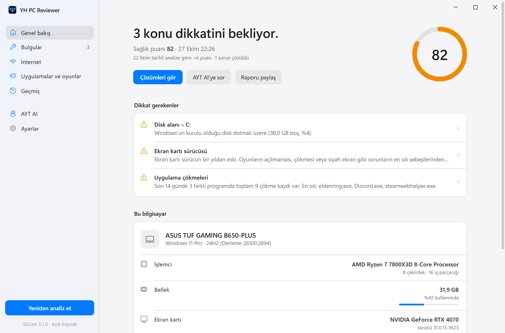
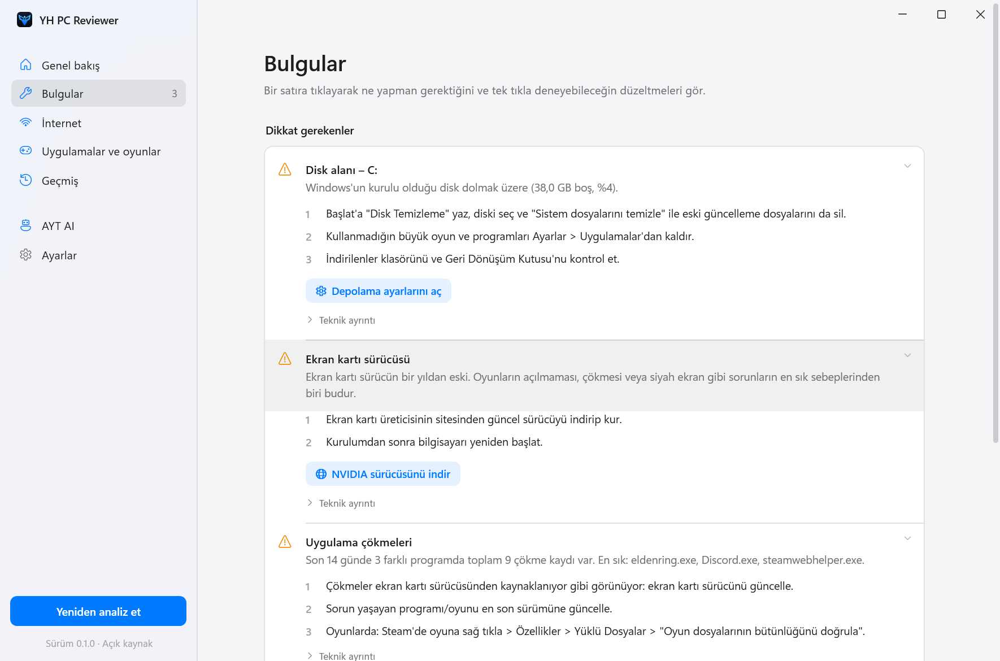
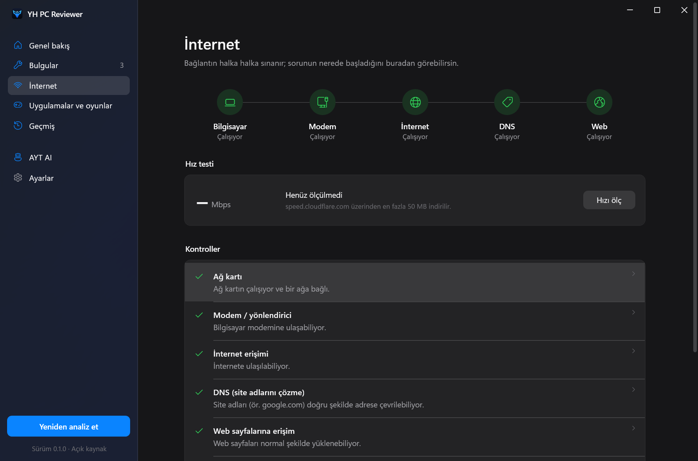

İnternet bağlanmıyor, oyunlar çöküyor, bilgisayar yavaşladı mı? Tek tıkla incele; ne olduğunu sade bir dille, ne yapacağını adım adım öğren.

İnternetten diske, çöken oyunlardan pil sağlığına kadar yaklaşık 20 kontrol. Hepsi 15 saniyede.
Bilgisayar → modem → internet → DNS → web. Sorunun hangi halkada başladığını gösterir; istersen hızını da ölçer.
Son iki haftada çöken programları ve nedenini bulur: eski sürücü mü, eksik Visual C++ mı?
Dolmak üzere olan diskler, disk sağlığı, beklenmedik kapanmalar, mavi ekranlar ve pil yıpranması.
Doğru Windows ayarını açar, DNS önbelleğini ya da geçici dosyaları temizler. Bir şey değişecekse önce sorar.
Kullanıcı adı, bilgisayar adı, IP ve MAC adresleri gizlenmiş raporu kopyala, YazılımHub'da yardım iste.
İstersen raporunu yapay zekâya yorumlat ve sorularını sor. Gönderilecek metni her zaman önce sen onaylarsın.
Her bulgu: ne oldu, ne yapmalısın ve tek tıkla deneyebileceğin çözüm.


Kaynak kodu herkese açık, exe GitHub'ın sunucularında bu koddan derlenir ve imzalı bir köken kaydıyla yayınlanır.
GitHub CLI ile, indirdiğin exe'nin bu depodan ve hangi commit'ten derlendiğini doğrula:
gh attestation verify YHPCReviewer-win-x64.exe --repo aytcode/YH-PCReviewer
Ya da SHA-256 özetini sürümdeki SHA256SUMS.txt ile karşılaştır:
Get-FileHash .\YHPCReviewer-win-x64.exe
| Adres | Ne zaman |
|---|---|
1.1.1.1 · 8.8.8.8 · 9.9.9.9 | Analizde (ping) |
msftconnecttest.com | Analizde (web testi) |
speed.cloudflare.com | Yalnızca hız testinde |
| Senin AYT AI adresin | Yalnızca soru sorunca |
Telemetri, reklam ya da otomatik güncelleme yok. Gizlilik ayrıntıları ›
İlk açılışta Windows SmartScreen uyarısı çıkabilir: exe henüz ticari kod imzalama sertifikası taşımıyor. “Ek bilgi → Yine de çalıştır” ile açabilirsin; önce yukarıdaki doğrulamayı yapmanı öneririz.